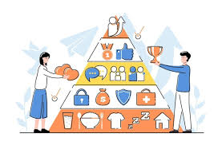

Het bruto binnenlands product (bbp) wordt wereldwijd nog altijd gezien als dé maatstaf voor economische groei en dus ook voor welvaart. Toch is er steeds meer kritiek op deze benadering. Het bbp zegt bijvoorbeeld niets over milieuvervuiling, gezondheid of geluk van mensen (Easterlin, 1974; Stevenson & Wolfers, 2008). Ook in onze eerdere analyse kwamen we tot de conclusie dat een bredere benadering nodig is om welvaart écht goed te meten. Daarom hebben wij een alternatief model ontwikkeld, het BGM-model, dat staat voor Basisbehoeften, Geluk en Milieu.
De eerste pijler van het model zijn de basisbehoeften. Iedereen heeft recht op toegang tot de dingen die nodig zijn voor een menswaardig bestaan: schoon drinkwater, voedsel, onderdak, onderwijs en gezondheidszorg. In plaats van één vaste wereldwijde ondergrens, stellen wij voor dat landen zelf kunnen bepalen wat in hun cultuur of situatie onder basisbehoeften valt. Zo houden we rekening met verschillen in waarden en levensomstandigheden tussen landen. Elk land stelt zijn eigen "basisindex" op, zodat er lokaal maatwerk mogelijk is, maar wel op een eerlijke manier gemeten wordt of mensen aan hun fundamentele behoeften kunnen voldoen.
De tweede pijler is geluk. Mensen kunnen genoeg basisvoorzieningen hebben, zoals voedsel, onderdak en onderwijs, maar zich toch ongelukkig voelen. Welvaart draait daarom niet alleen om geld of economische groei, maar ook om de kwaliteit van leven. Denk aan mentale gezondheid, veiligheid, zingeving en sociale contacten. Daarom vinden wij dat landen ook moeten kijken naar hoe gelukkig mensen zijn. Dit kan bijvoorbeeld met de World Happiness Index of met eigen jaarlijkse onderzoeken. Zo krijg je een beter en completer beeld van hoe mensen hun leven ervaren (Easterlin, 1974; Stevenson & Wolfers, 2008).
De derde en laatste pijler is milieu. In veel bestaande modellen wordt onvoldoende gekeken naar hoe economische activiteiten het milieu belasten. In ons model is het milieu-onderdeel net zo belangrijk als de andere twee. Het meet zaken zoals CO₂-uitstoot, verlies van biodiversiteit, waterverbruik en de mate waarin een land overstapt op hernieuwbare energie of circulaire economie. Landen die hun economie laten groeien ten koste van de planeet zullen hier dus een lagere score halen. We stellen voor om bestaande gegevens zoals de Ecological Footprint en emissiegegevens te gebruiken om tot een eerlijke milieuscore te komen (Global Footprint Network, z.d.).
Deze drie onderdelen: basisbehoeften, geluk en milieu, vormen samen de BGM-score. Elk land krijgt een score op alle drie de gebieden, bijvoorbeeld van 0 tot 100. Samen geven die scores een veel evenwichtiger en menselijker beeld van hoe het echt gaat in een land. Een hoge bbp-groei zegt namelijk weinig als de mensen ongelukkig zijn of als het milieu zwaar wordt beschadigd. Ons model kijkt dus niet alleen naar de huidige economische prestaties, maar ook naar levenskwaliteit en toekomstbestendigheid.
We weten dat ook ons model uitdagingen kent, en met name de pijler geluk is daarin een kwetsbaar onderdeel. Het meten van geluk is namelijk sterk subjectief en cultuurafhankelijk. Wat mensen onder geluk verstaan en hoe ze daarop antwoorden, verschilt sterk per land. In sommige culturen is het bijvoorbeeld gebruikelijk om gematigd te antwoorden, terwijl in andere culturen mensen juist sneller hoge cijfers geven. Hierdoor kunnen internationale vergelijkingen minder betrouwbaar zijn, ook als de leefomstandigheden eigenlijk vergelijkbaar zijn (Easterlin, 1974; Stevenson & Wolfers, 2008). Daarnaast geven gelukscijfers vaak maar een momentopname weer. Ze kunnen beïnvloed worden door tijdelijke dingen, zoals problemen in de economie, politieke spanningen of persoonlijke omstandigheden zoals gezondheid of familieproblemen. Daardoor is het lastig om te zeggen of het geluk van mensen op de lange termijn echt beter of slechter wordt. Ook bestaat het risico dat landen hun cijfers mooier maken dan ze eigenlijk zijn. Om het meten van geluk betrouwbaarder te maken, is het beter om niet alleen te kijken naar één cijfer, maar ook naar verschillende aspecten zoals mentale gezondheid, sociale contacten en het gevoel dat het leven zin heeft. Daarnaast kunnen kwalitatieve gegevens, zoals interviews en verhalen, helpen om een vollediger beeld te krijgen van hoe mensen hun leven echt ervaren. Om ervoor te zorgen dat de gegevens eerlijk en transparant worden verzameld en gebruikt, zou een onafhankelijke organisatie toezicht moeten houden op het proces. Zo blijft het BGM-model een betrouwbaar en nuttig hulpmiddel voor het meten van welvaart.
Samenvattend vinden wij dat het BGM-model een beter alternatief is dan het bbp om welvaart te meten. Het model houdt rekening met wat mensen echt nodig hebben om goed te kunnen leven, zonder de aarde uit te putten of toekomstige generaties te benadelen. Door breder te kijken dan alleen naar economische groei, wordt zichtbaar waar landen écht vooruitgang boeken en waar nog verbetering nodig is.